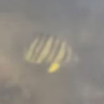
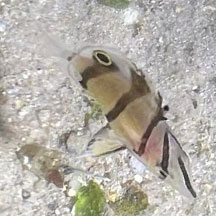
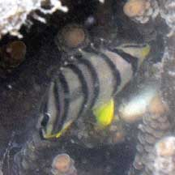

|
|
| fishes text index | photo index |
| Phylum Chordata > Subphylum Vertebrate > fishes > Family Chaetodontidae |
| Eightband
butterflyfish Chaetodon octofasciatus Family Chaetodontidae updated Sep 2020 Where seen? This disc-shaped fish with eight bars is sometimes seen on some of our Southern shores among live corals. Features: To about 12cm. Body flat, circular disk-shaped, snout slightly pointed. 8 black bands, sometimes a broad black horizontal bar between the middle narrow bars, sometimes yellowish or brownish between 2 pair of bands nearer the tail. Yellow pectoral fins, yellowish base of fins, belly and mouth. White-ringed black spot at the base of the tail. Juveniles often seen in groups among branching corals such as Acropora corals. Adults seen in pairs. |
 Sisters Island, Dec 10 |

| What
does it eat? According to FishBase, it eats only coral polyps. But the IUCN Red
List says there are currently no data on its diet, but it is strongly
coral dependent. Status and threats: Unfortunately these beautiful fishes are popular in the live aquarium trade although they are considered difficult to keep and feed. It is said it often starves to death when in captivity. |
| Eightband butterflyfishes on Singapore shores |
On wildsingapore
flickr
|
| Other sightings on Singapore shores |
 Sentosa Serapong, Jul 25 From video shared by Kelvin Yong on facebook. |
 Young one? Cyrene, Apr 24 Photo shared by Kelvin Yong on facebook. |
 Pulau Sudong, Dec 09 Photo shared by Toh Chay Hoon on her flickr. |
{kind=link}
Links
References
|